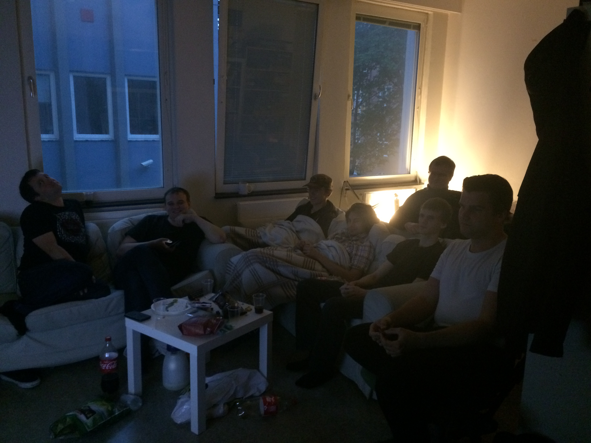

fredag Animekveld
Er du glad i japansk tegnefilm? Hver fredag finner vi de nyeste episodene og ser på dem mens vi nyter noe godt. Vi viser denne senongens nye animeer.
Sesongoversikten finner du her
Disclaimer: ved avstemning kan vi veto en eller flere serier.
Påminn meg